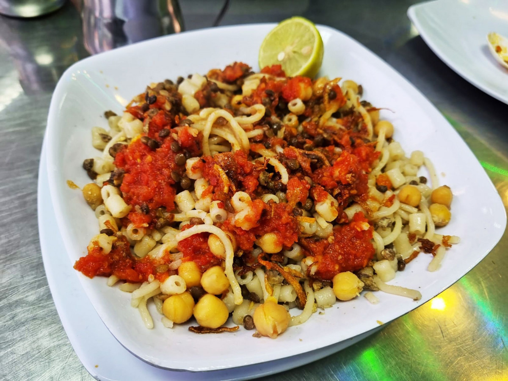

How to make Koshari At Home (:
Ingredients:
- Rice
- Lentils
- Pasta (macaroni or any short pasta)
- Chickpeas
- Onion
- Garlic
- Tomato sauce
- Vinegar
- Cooking oil
- Salt and pepper to taste
Instructions:
- Cook rice according to package instructions.
- Boil lentils until tender, then drain excess water.
- Cook pasta according to package instructions, then set aside.
- In a separate pot, boil chickpeas until soft.
- In a pan, sauté chopped onions and minced garlic in cooking oil until golden brown.
- Add tomato sauce to the onion and garlic mixture, simmer for a few minutes.
- Season the tomato sauce with salt, pepper, and a splash of vinegar to taste.
- Mix the cooked lentils, rice, pasta, and chickpeas in a large bowl.
- Pour the tomato sauce mixture over the rice and lentil mixture.
- Toss everything together until well combined.
- Serve the Koshari hot, optionally garnished with fried onions on top.
Final Result
